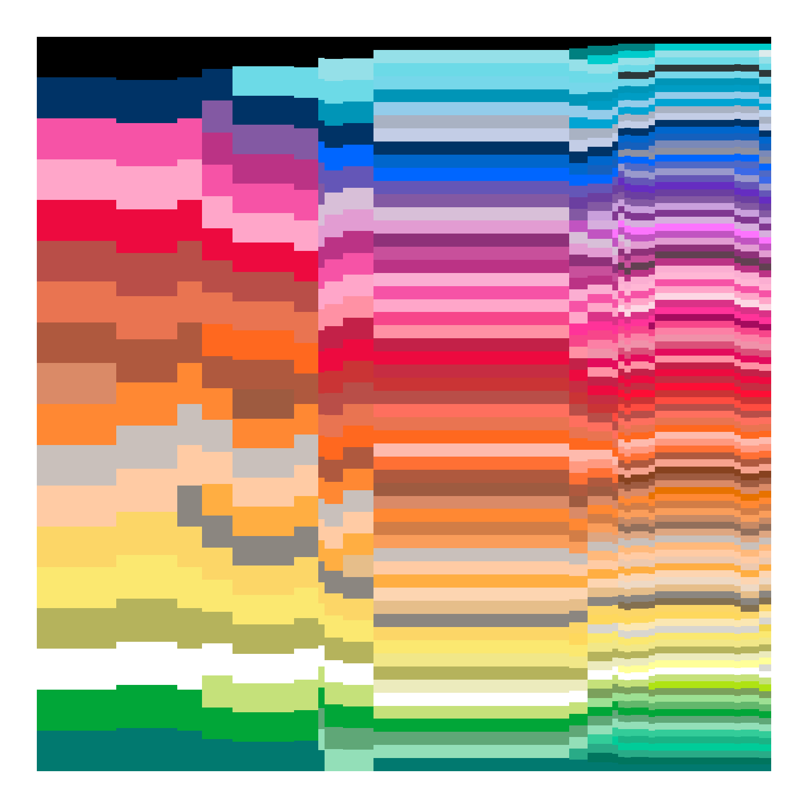

![]()
url <- "https://en.wikipedia.org/wiki/List_of_Crayola_crayon_colors"
raw <- url |>
polite::bow() |>
polite::scrape() |>
rvest::html_nodes("table.wikitable")What am I doing? Why am I here? Oh that’s right. So I was having coffee this morning reading the nerd news on mastodon as a girl likes to do and this this very cool post about crayon colours by Kim Scheinberg caught my attention.
The image comes from this blog post by Stephen Von Worley – he has a follow up too. Interesting. I realise I am of course about to waste half a day on this…
It’s the prologue, baby
Having read the blog posts by Von Worley I worked out that the source of the data is the Wikipedia list of Crayola crayon colours, and as it happens I know how to pull data from Wikipedia tables into R. Thanks to this amazing post by Isabella Velásquez, I’d learned all about using the polite package to make sure that my webscraping is appropriate and respectful, and using the rvest package to do the actual scraping. What I had assumed, is that reading the table into R was going to be a simple matter of writing some code like this…
This scrapes all the tables from the page, but I only want the first one. That’s the big table with the listing of Crayolas standard colours. The table itself looks a little like this:
raw[[1]]{html_node}
<table class="wikitable sortable">
[1] <caption>\n</caption>
[2] <tbody>\n<tr>\n<th width="10%" class="sortable">Color\n</th>\n<th wid ...I don’t want to parse the html myself, but the hope is that I can use something like the html_table() function to extract the table and return a data frame. Okay, let’s give it a go…
crayola <- raw[[1]] |> rvest::html_table()Well it hasn’t thrown an error, but when I look at the crayola data frame…
crayola# A tibble: 168 × 9
Color Name Hexadecimal in their website depicti…¹ Years in production[…² Notes `16-Box` `24-Box` `32-Box` `64-Box`
<lgl> <chr> <chr> <chr> <chr> <chr> <chr> <chr> <chr>
1 NA Red "#ED0A3F" 1903–present "" "Yes" "Yes" "Yes" "Yes"
2 NA Maroon "#C32148" 1949–present "Kno… "No" "No" "No" "No"
3 NA Scarlet "#FD0E35" 1998–present "Kno… "No" "Yes" "Yes" "Yes"
4 NA Brick Red "#C62D42" 1958–present "" "No" "No" "No" "Yes"
5 NA English Vermilion "" 1903–1935 "Als… "" "" "" ""
6 NA Madder Lake "" 1903–1935 "" "" "" "" ""
7 NA Permanent Geranium Lake "" 1903–circa 1910 "" "" "" "" ""
8 NA Maximum Red "" 1926–1944 "Par… "" "" "" ""
9 NA Chestnut "#B94E48" 1903–present "Kno… "No" "No" "Yes" "Yes"
10 NA Orange-Red "#FF5349" 1958–1990 "" "" "" "" ""
# ℹ 158 more rows
# ℹ abbreviated names: ¹`Hexadecimal in their website depiction[b]`, ²`Years in production[2]`… I encounter a rather awkward problem. The color field, which renders on the Wikipedia page as a pretty block of colour showing what the crayon colour looks like, is empty. Sure, I do have text containing hex codes for some of the crayons, but the missing data isn’t missing at random. Old crayon colours are the ones systematically missing an official hex code. Okay, so I really would like to have some data in my color column.
Act I: I think it works like the hanky code
Look, that’s not a big deal right? Not having any colours for a post about colours? I guess the post will be short. Eh. Let’s set that aside and focus on the important things. Those column names need a little cleaning, so I’ll do the thing I always do and break out janitor and dplyr:
crayola <- crayola |>
janitor::clean_names() |>
dplyr::rename(
listed = hexadecimal_in_their_website_depiction_b,
years = years_in_production_2
)Much nicer:
crayola# A tibble: 168 × 9
color name listed years notes x16_box x24_box x32_box x64_box
<lgl> <chr> <chr> <chr> <chr> <chr> <chr> <chr> <chr>
1 NA Red "#ED0A3F" 1903–present "" "Yes" "Yes" "Yes" "Yes"
2 NA Maroon "#C32148" 1949–present "Known as \"Dark Red\", 1949–1958.[2]" "No" "No" "No" "No"
3 NA Scarlet "#FD0E35" 1998–present "Known as \"Torch Red\", 1998.[2]" "No" "Yes" "Yes" "Yes"
4 NA Brick Red "#C62D42" 1958–present "" "No" "No" "No" "Yes"
5 NA English Vermilion "" 1903–1935 "Also spelled \"Vermillion\".[2]" "" "" "" ""
6 NA Madder Lake "" 1903–1935 "" "" "" "" ""
7 NA Permanent Geranium Lake "" 1903–circa 1910 "" "" "" "" ""
8 NA Maximum Red "" 1926–1944 "Part of the Munsell line.[2]" "" "" "" ""
9 NA Chestnut "#B94E48" 1903–present "Known as \"Indian Red\" before 1999.[2]" "No" "No" "Yes" "Yes"
10 NA Orange-Red "#FF5349" 1958–1990 "" "" "" "" ""
# ℹ 158 more rowsNow where was I? What’s that maxim about never using background colour to encode substantive data in a table? I seem to have run afoul of that. Let’s take a look at the elements of the html table and see if I can work out where things went wrong…
cells <- raw[[1]] |> rvest::html_elements("td")
cells{xml_nodeset (1512)}
[1] <td style="background: #ED0A3F; color: white"> \n</td>
[2] <td>Red\n</td>
[3] <td align="center" style="background:#E9E9E9">#ED0A3F\n</td>
[4] <td>1903–present\n</td>
[5] <td>\n</td>
[6] <td style="background:#9EFF9E;vertical-align:middle;text-align:cente ...
[7] <td style="background:#9EFF9E;vertical-align:middle;text-align:cente ...
[8] <td style="background:#9EFF9E;vertical-align:middle;text-align:cente ...
[9] <td style="background:#9EFF9E;vertical-align:middle;text-align:cente ...
[10] <td style="background: #C32148; color: white"> \n</td>
[11] <td>Maroon\n</td>
[12] <td align="center" style="background:#E9E9E9">#C32148\n</td>
[13] <td>1949–present\n</td>
[14] <td>Known as "Dark Red", 1949–1958.<sup id="cite_ref-WelterColorName ...
[15] <td style="background:#FFC7C7;vertical-align:middle;text-align:cente ...
[16] <td style="background:#FFC7C7;vertical-align:middle;text-align:cente ...
[17] <td style="background:#FFC7C7;vertical-align:middle;text-align:cente ...
[18] <td style="background:#FFC7C7;vertical-align:middle;text-align:cente ...
[19] <td style="background: #FD0E35; color: white"> \n</td>
[20] <td>Scarlet\n</td>
...Okay yeah. You can see the problem looking at the 1st and 10th line of the output here. The piece of information we need is embedded in the css style attribute, and it’s only in the style metadata attribute. There’s no data in the actual “td” element for html_table() to capture. I’m going to have to fix that myself I guess. Sigh.
The first part of my process was to find the relevant subset of cells. There’s probably a better way to do it, but my approach was based on noting that (a) it’s really easy to find the cells containing the colour names (“Red”, “Maroon”, etc), and (b) the cell to the left of it is always the one that has the background colour that I’m looking for. So, my first step was to manually pull out the text in each cell. That’s easy to do with rvest thanks to the html_text() function, and just to make my life a little easier I used stringr to remove all the \n characters at the end of each cell:
cell_text <- cells |>
rvest::html_text() |>
stringr::str_remove_all("\n$")And here’s the text in the first 20 cells:
cell_text[1:20] [1] " "
[2] "Red"
[3] "#ED0A3F"
[4] "1903–present"
[5] ""
[6] "Yes"
[7] "Yes"
[8] "Yes"
[9] "Yes"
[10] " "
[11] "Maroon"
[12] "#C32148"
[13] "1949–present"
[14] "Known as \"Dark Red\", 1949–1958.[2]"
[15] "No"
[16] "No"
[17] "No"
[18] "No"
[19] " "
[20] "Scarlet" So when I now match this text against the colour names stored in crayola$name, I’ll detect “Red” in cell 2, “Maroon” in cell 11, and so on. If I subtract 1 from each of these values, I now have the indices of the table cells that contain the style information I need.
ind <- which(cell_text %in% crayola$name) - 1Here’s what those cells look like:
cells[ind]{xml_nodeset (168)}
[1] <td style="background: #ED0A3F; color: white"> \n</td>
[2] <td style="background: #C32148; color: white"> \n</td>
[3] <td style="background: #FD0E35; color: white"> \n</td>
[4] <td style="background: #C62D42; color: white"> \n</td>
[5] <td style="background: #CC474B; color: white"> \n</td>
[6] <td style="background: #CC3336; color: white"> \n</td>
[7] <td style="background: #E12C2C; color: white"> \n</td>
[8] <td style="background: #D92121; color: white"> \n</td>
[9] <td style="background: #B94E48; color: white"> \n</td>
[10] <td style="background: #FF5349; color: white"> \n</td>
[11] <td style="background: #FE4C40; color: white"> \n</td>
[12] <td style="background: #FE6F5E; color: white"> \n</td>
[13] <td style="background: #B33B24; color: white"> \n</td>
[14] <td style="background: #CC553D; color: white"> \n</td>
[15] <td style="background: #E6735C; color: white"> \n</td>
[16] <td style="background: #FF9980; color: white"> \n</td>
[17] <td style="background: #E58E73; color: white"> \n</td>
[18] <td style="background: #FF7034; color: white"> \n</td>
[19] <td style="background: #FF681F; color: white"> \n</td>
[20] <td style="background: #FF8833; color: white"> \n</td>
...That’s much nicer. Now I have something with a consistent format that I can process without too much pain. The rvest package has a html_attr() function which I can use to pull out the contents of the style attribute as a string. So, after spending a few minutes trying to remember how regular expressions work, I used str_extract() to pull out the hexadecimal codes like this:
background <- cells[ind] |>
rvest::html_attr("style") |>
stringr::str_extract("#[0-9ABCDEF]{6}")Let’s take a look:
background [1] "#ED0A3F" "#C32148" "#FD0E35" "#C62D42" "#CC474B" "#CC3336" "#E12C2C" "#D92121" "#B94E48" "#FF5349" "#FE4C40" "#FE6F5E" "#B33B24"
[14] "#CC553D" "#E6735C" "#FF9980" "#E58E73" "#FF7034" "#FF681F" "#FF8833" "#FFB97B" "#ECAC76" "#E77200" "#FFAE42" "#F2BA49" "#FBE7B2"
[27] "#F2C649" "#F8D568" "#FCD667" "#FED85D" "#FBE870" "#F1E788" "#FFEB00" "#B5B35C" "#ECEBBD" "#FAFA37" "#FFFF99" "#FFFF9F" "#D9E650"
[40] "#ACBF60" "#AFE313" "#BEE64B" "#C5E17A" "#5E8C31" "#7BA05B" "#9DE093" "#63B76C" "#4D8C57" "#01A638" "#6CA67C" "#5FA777" "#93DFB8"
[53] "#33CC99" "#1AB385" "#29AB87" "#00CC99" "#00755E" "#8DD9CC" "#01796F" "#30BFBF" "#00CCCC" "#008080" "#8FD8D8" "#95E0E8" "#6CDAE7"
[66] "#2D383A" "#76D7EA" "#7ED4E6" "#0095B7" "#009DC4" "#02A4D3" "#47ABCC" "#2EB4E6" "#339ACC" "#93CCEA" "#2887C8" "#003366" "#0066CC"
[79] "#1560BD" "#0066FF" "#A9B2C3" "#C3CDE6" "#4570E6" "#3C69E7" "#7A89B8" "#4F69C6" "#8D90A1" "#8C90C8" "#7070CC" "#9999CC" "#ACACE6"
[92] "#766EC8" "#6456B7" "#3F26BF" "#8B72BE" "#652DC1" "#6B3FA0" "#8359A3" "#8F47B3" "#C9A0DC" "#BF8FCC" "#803790" "#733380" "#D6AEDD"
[105] "#C154C1" "#FC74FD" "#732E6C" "#E667CE" "#E29CD2" "#8E3179" "#D96CBE" "#D8BFD8" "#C8509B" "#BB3385" "#D982B5" "#A63A79" "#A50B5E"
[118] "#614051" "#F653A6" "#DA3287" "#FF3399" "#FBAED2" "#FFB7D5" "#FFA6C9" "#F7468A" "#E30B5C" "#FDD7E4" "#E62E6B" "#DB5079" "#FC80A5"
[131] "#F091A9" "#FF91A4" "#A55353" "#CA3435" "#FEBAAD" "#F7A38E" "#E97451" "#AF593E" "#9E5B40" "#87421F" "#926F5B" "#DEA681" "#D27D46"
[144] "#664228" "#FA9D5A" "#EDC9AF" "#FFCBA4" "#805533" "#FDD5B1" "#EED9C4" "#665233" "#837050" "#E6BC5C" "#92926E" "#E6BE8A" "#C9C0BB"
[157] "#DA8A67" "#C88A65" "#000000" "#736A62" "#8B8680" "#C8C8CD" "#D9D6CF" "#FFFFFF" "#F1D651" "#DDEBEC" "#D9DAD2" "#C0D5F0"Yay, those look like hex colours. Better yet, because I’ve been careful to ensure that I’ve matched everything to the correct colours and in the correct order, I can insert them into the crayola tibble where they should have been in the first place:
crayola$color <- background
crayola# A tibble: 168 × 9
color name listed years notes x16_box x24_box x32_box x64_box
<chr> <chr> <chr> <chr> <chr> <chr> <chr> <chr> <chr>
1 #ED0A3F Red "#ED0A3F" 1903–present "" "Yes" "Yes" "Yes" "Yes"
2 #C32148 Maroon "#C32148" 1949–present "Known as \"Dark Red\", 1949–1958.[2]" "No" "No" "No" "No"
3 #FD0E35 Scarlet "#FD0E35" 1998–present "Known as \"Torch Red\", 1998.[2]" "No" "Yes" "Yes" "Yes"
4 #C62D42 Brick Red "#C62D42" 1958–present "" "No" "No" "No" "Yes"
5 #CC474B English Vermilion "" 1903–1935 "Also spelled \"Vermillion\".[2]" "" "" "" ""
6 #CC3336 Madder Lake "" 1903–1935 "" "" "" "" ""
7 #E12C2C Permanent Geranium Lake "" 1903–circa 1910 "" "" "" "" ""
8 #D92121 Maximum Red "" 1926–1944 "Part of the Munsell line.[2]" "" "" "" ""
9 #B94E48 Chestnut "#B94E48" 1903–present "Known as \"Indian Red\" before 1999.[2]" "No" "No" "Yes" "Yes"
10 #FF5349 Orange-Red "#FF5349" 1958–1990 "" "" "" "" ""
# ℹ 158 more rowsFinally!
Act II: One hundred years of tidyr
If life were at all fair my data wrangling woes would now be over, but of course they are not. If I’m going to analyse the Crayola data by year it will be useful to me if the year column has nicely formatted data, and of course it does not:
crayola$years [1] "1903–present" "1949–present" "1998–present" "1958–present"
[5] "1903–1935" "1903–1935" "1903–circa 1910" "1926–1944"
[9] "1903–present" "1958–1990" "1997–present" "1958–present"
[13] "1903–circa 1910" "1903–1944" "1903–circa 1910" "1990–present"
[17] "1926–1944" "1958–present" "1930–present" "1903–present"
[21] "1993–present" "1926–1944, 1949–1958" "2003–present" "1930–present"
[25] "1926–1944" "1998–present" "1903–1990" "1958–1990"
[29] "1903–present" "1990–2017[2][3][4]" "1903–present" "1958–present"
[33] "1926–1944" "1903–present" "1958–present" "1926–1944"
[37] "1998–present" "1903–1990" "1926–1944" "1926–1944"
[41] "2003–present" "1903–1935" "1930–present" "1926–1944"
[45] "1993–present" "1993–present" "1998–present" "1926–1944"
[49] "1903–present" "1903–1939" "1949–present" "1949–present"
[53] "1993–present" "1998–present" "1990–present" "1997–present"
[57] "1993–present" "1926–1944" "1903–1949, 1958–present" "1926–1944"
[61] "1993–present" "1990–2003" "1958" "1949–present"
[65] "1935–present" "1998–present" "1958–present" "1926–1944"
[69] "1949–present" "1993–present" "1990–present" "1926–1958"
[73] "1903–1958" "1949–1958" "1958–present" "1958–1990"
[77] "1903–present" "1958–present" "1993–present" "1949–present"
[81] "1958–present" "1958–present" "1935–1958" "2017–present[5]"
[85] "2003–present" "1999–present" "1998–present" "1903–1958"
[89] "1903–circa 1910" "1998–present" "1926–1944" "1903–circa 1910, 1930–1990"
[93] "1949–present" "1903–1944" "1926–1944" "1998–present"
[97] "1990–present" "1930–1949, 1958–present" "1949–1958" "1993–present"
[101] "1949–1958" "1997–present" "1926–1944" "1993–present"
[105] "1990–present" "1997–present" "1903–1930" "1949–1958"
[109] "1949–present" "1958–present" "1949–1958" "1949–1999"
[113] "1958–2003" "1930–present" "1926–1944" "1926–1944"
[117] "2003–present" "1998–present" "1903–present" "1993–present"
[121] "1990–present" "1958–present" "1998–present" "1903–present"
[125] "1958–present" "1993–present" "1998–present" "1935–1958"
[129] "1998–present" "1993–present" "1993–present" "1949–present"
[133] "1926–1944" "1949–present" "1958–present" "1998–present"
[137] "1903–present" "1903–present" "1935–1944, 1958–present" "1998–present"
[141] "1998–present" "1993–present" "1958–present" "1903–1910"
[145] "1958–present" "1998–present" "1903–present" "1903–1944"
[149] "1958–present" "1998–present" "1903–1990" "1998–present"
[153] "1903–circa 1910" "1903–1944" "1953–present" "1903–present"
[157] "1903–1915, 1958–present" "1998–present" "1903–present" "1903–1910"
[161] "1926–present" "1958–1990" "1993–present" "1903–present"
[165] "2021, 2022" "2021, 2022" "2021, 2022" "2021, 2022" There are several problems I’m going to need to solve to get this into a regular form:
- The “circa” text will have to be removed
- White spaces will need to be removed
- Footnote text will need to be removed
- The word “present” will have to be replaced by “2022”
- The single year “1958” will need to be replaced by an interval “1958-1958”
- The comma separated list “2021,2022” will need to be an interval “2021-2022”
Here’s a little bit of stringr code that does that:
crayola <- crayola |>
dplyr::mutate(
years = years |>
stringr::str_remove_all(" ") |>
stringr::str_remove_all("\\[.\\]") |>
stringr::str_remove_all("circa") |>
stringr::str_replace_all("present", "2022") |>
stringr::str_replace_all("^1958$", "1958-1958") |>
stringr::str_replace_all("2021,2022", "2021-2022"),
) The years column now has a regular form. Each entry is either a contiguous interval like "1903-2022", or a comma separated list of two such intervals like "1903–1910,1930–1990":
crayola$years [1] "1903–2022" "1949–2022" "1998–2022" "1958–2022" "1903–1935"
[6] "1903–1935" "1903–1910" "1926–1944" "1903–2022" "1958–1990"
[11] "1997–2022" "1958–2022" "1903–1910" "1903–1944" "1903–1910"
[16] "1990–2022" "1926–1944" "1958–2022" "1930–2022" "1903–2022"
[21] "1993–2022" "1926–1944,1949–1958" "2003–2022" "1930–2022" "1926–1944"
[26] "1998–2022" "1903–1990" "1958–1990" "1903–2022" "1990–2017"
[31] "1903–2022" "1958–2022" "1926–1944" "1903–2022" "1958–2022"
[36] "1926–1944" "1998–2022" "1903–1990" "1926–1944" "1926–1944"
[41] "2003–2022" "1903–1935" "1930–2022" "1926–1944" "1993–2022"
[46] "1993–2022" "1998–2022" "1926–1944" "1903–2022" "1903–1939"
[51] "1949–2022" "1949–2022" "1993–2022" "1998–2022" "1990–2022"
[56] "1997–2022" "1993–2022" "1926–1944" "1903–1949,1958–2022" "1926–1944"
[61] "1993–2022" "1990–2003" "1958-1958" "1949–2022" "1935–2022"
[66] "1998–2022" "1958–2022" "1926–1944" "1949–2022" "1993–2022"
[71] "1990–2022" "1926–1958" "1903–1958" "1949–1958" "1958–2022"
[76] "1958–1990" "1903–2022" "1958–2022" "1993–2022" "1949–2022"
[81] "1958–2022" "1958–2022" "1935–1958" "2017–2022" "2003–2022"
[86] "1999–2022" "1998–2022" "1903–1958" "1903–1910" "1998–2022"
[91] "1926–1944" "1903–1910,1930–1990" "1949–2022" "1903–1944" "1926–1944"
[96] "1998–2022" "1990–2022" "1930–1949,1958–2022" "1949–1958" "1993–2022"
[101] "1949–1958" "1997–2022" "1926–1944" "1993–2022" "1990–2022"
[106] "1997–2022" "1903–1930" "1949–1958" "1949–2022" "1958–2022"
[111] "1949–1958" "1949–1999" "1958–2003" "1930–2022" "1926–1944"
[116] "1926–1944" "2003–2022" "1998–2022" "1903–2022" "1993–2022"
[121] "1990–2022" "1958–2022" "1998–2022" "1903–2022" "1958–2022"
[126] "1993–2022" "1998–2022" "1935–1958" "1998–2022" "1993–2022"
[131] "1993–2022" "1949–2022" "1926–1944" "1949–2022" "1958–2022"
[136] "1998–2022" "1903–2022" "1903–2022" "1935–1944,1958–2022" "1998–2022"
[141] "1998–2022" "1993–2022" "1958–2022" "1903–1910" "1958–2022"
[146] "1998–2022" "1903–2022" "1903–1944" "1958–2022" "1998–2022"
[151] "1903–1990" "1998–2022" "1903–1910" "1903–1944" "1953–2022"
[156] "1903–2022" "1903–1915,1958–2022" "1998–2022" "1903–2022" "1903–1910"
[161] "1926–2022" "1958–1990" "1993–2022" "1903–2022" "2021-2022"
[166] "2021-2022" "2021-2022" "2021-2022" That’s better because the data format is now consistent, but it’s not tidy. In the long run, what I really want is a nice tidy tibble: each row should correspond to a single observation. If “Red” was a colour in 1935, then there should be a row in my table for which name = "Red" and year = 1935. That’s not quite what I have here, so I have more data wrangling to do and this time tidyr will be my best friend.
The first thing I’m going to do is use tidyr::separate() to split the years variable into two variables, years_1 and years_2. The years_1 variable will contain the first time interval for which a particular crayon colour was in production, and the years_2 variable will contain the second interval in which it was in production. For almost all colours, years_2 will be NA. It’s only those special cases like "1903–1910,1930–1990" that will have values in both.
Then, because I don’t really see a need to have two variables that both represent a period of time, I’ll use tidyr::pivot_longer() to give myself a data set in which there is one row for every continuous time interval:
crayola <- crayola |>
tidyr::separate(
col = years,
into = c("years_1", "years_2"),
sep = ",",
fill = "right"
) |>
tidyr::pivot_longer(
cols = starts_with("years_"),
names_prefix = "years_",
names_to = "interval",
values_to = "years"
) |>
dplyr::filter(!is.na(years))To give you a sense of what the data looks like in this form, I’ll pull out the rows corresponding to two different crayon colours, “Maroon” and “Violet-Blue”:
crayola |>
dplyr::filter(name == "Maroon" | name == "Violet-Blue")# A tibble: 3 × 10
color name listed notes x16_box x24_box x32_box x64_box interval years
<chr> <chr> <chr> <chr> <chr> <chr> <chr> <chr> <chr> <chr>
1 #C32148 Maroon #C32148 "Known as \"Dark Red\", 1949–1958.[2]" "No" "No" "No" "No" 1 1949–2022
2 #766EC8 Violet-Blue #766EC8 "Known as \"Blue-Violet\", 1930–1958.[2]" "" "" "" "" 1 1903–1910
3 #766EC8 Violet-Blue #766EC8 "Known as \"Blue-Violet\", 1930–1958.[2]" "" "" "" "" 2 1930–1990The “Maroon” crayon has been in production continuously since 1949, so there is only one row in the table for that one. The “Violet-Blue” crayon was in production from 1903 to 1910, and again from 1930 to 1990. These two production periods are each represented as a row.
Excellent. Next, I’ll use separate() again to split the years interval into two columns, one for the year_started and another for the year_ended. Having done so, the year information is finally in a numeric format, so I can coerce it from character to integer:
crayola <- crayola |>
tidyr::separate(
col = years,
into = c("year_started", "year_ended")
) |>
dplyr::mutate(
interval = as.integer(interval),
year_started = as.integer(year_started),
year_ended = as.integer(year_ended)
)crayola# A tibble: 174 × 11
color name listed notes x16_box x24_box x32_box x64_box interval year_started year_ended
<chr> <chr> <chr> <chr> <chr> <chr> <chr> <chr> <int> <int> <int>
1 #ED0A3F Red "#ED0A3F" "" "Yes" "Yes" "Yes" "Yes" 1 1903 2022
2 #C32148 Maroon "#C32148" "Known as \"Dark Red\", 1… "No" "No" "No" "No" 1 1949 2022
3 #FD0E35 Scarlet "#FD0E35" "Known as \"Torch Red\", … "No" "Yes" "Yes" "Yes" 1 1998 2022
4 #C62D42 Brick Red "#C62D42" "" "No" "No" "No" "Yes" 1 1958 2022
5 #CC474B English Vermilion "" "Also spelled \"Vermillio… "" "" "" "" 1 1903 1935
6 #CC3336 Madder Lake "" "" "" "" "" "" 1 1903 1935
7 #E12C2C Permanent Geranium Lake "" "" "" "" "" "" 1 1903 1910
8 #D92121 Maximum Red "" "Part of the Munsell line… "" "" "" "" 1 1926 1944
9 #B94E48 Chestnut "#B94E48" "Known as \"Indian Red\" … "No" "No" "Yes" "Yes" 1 1903 2022
10 #FF5349 Orange-Red "#FF5349" "" "" "" "" "" 1 1958 1990
# ℹ 164 more rowsWe’re getting close. At this point the last bit of work I have to do to fix the year data is unpack it. Instead of representing the data for Maroon crayons with one row with a year_started value of 1949 and year_ended value of 2022, I want to have a single column called year, and the data should contain one row for every year in which Maroon was in production. Somewhere in the back of my head there is the thought that there must be an easy way to do this with tidyr, but my ingenuity failed me this time and I fell back on my usual solution… purrr.
It’s a two-step process. Step one: write a little function that expects to receive the values stored in one row of the existing data frame, and returns a new data frame in the format I want. In this case, I want a tibble that has one row for each year in range starting year_started and ending year_ended, but otherwise has the same structure as the existing data. The unpack_row() function below does that:
unpack_row <- function(color, name, year_started, year_ended, ...) {
tibble::tibble(
name = name,
color = color,
year = year_started:year_ended,
...
)
}So now I’ll do the unpacking with purrr::pmap_dfr(), sort the rows into a nice order using dplyr::arrange(), and add an id column to ensure that every row in the table has a unique identifier:
crayola <- crayola |>
purrr::pmap_dfr(unpack_row) |>
dplyr::arrange(year, color) |>
dplyr::mutate(id = dplyr::row_number())Voilà!
crayola# A tibble: 7,749 × 11
name color year listed notes x16_box x24_box x32_box x64_box interval id
<chr> <chr> <int> <chr> <chr> <chr> <chr> <chr> <chr> <int> <int>
1 Black #000000 1903 "#000000" "" "Yes" "Yes" "Yes" "Yes" 1 1
2 Midnight Blue #003366 1903 "#003366" "Known as \"Prussian Blue\", 1903–1958.[2… "No" "No" "No" "No" 1 2
3 Pine Green #01796F 1903 "#01796F" "Known as \"Dark Chrome Green\" (\"Chrome… "No" "No" "No" "No" 1 3
4 Green #01A638 1903 "#01A638" "" "Yes" "Yes" "Yes" "Yes" 1 4
5 Blue (I) #2EB4E6 1903 "" "Known as \"Celestial Blue\", 1935–1949, … "" "" "" "" 1 5
6 Ultramarine Blue #3F26BF 1903 "" "" "" "" "" "" 1 6
7 Van Dyke Brown #664228 1903 "" "Same color as \"Brown\" (1903–1910).[2]" "" "" "" "" 1 7
8 Raw Umber #665233 1903 "#665233" "" "" "" "" "" 1 8
9 Medium Chrome Green #6CA67C 1903 "" "\"Chrome Green, Medium\" on labels. Prod… "" "" "" "" 1 9
10 Celestial Blue #7070CC 1903 "" "" "" "" "" "" 1 10
# ℹ 7,739 more rowsAct III: I said pet, I said LUV, I said pet…
Okay I have one last thing to do before I’m done with the data wrangling. Having hex strings associated with each crayon colour is nice and is exactly what I need for plotting, but you can’t construct a nice ordering of colours since colour space is three dimensional, more or less. I’m trying my very best to forget everything I ever learned about the psychophysics of human colour perception, but even so I’m not silly enough to try to work with raw RGB values. Instead I’ll use the colorspace package to convert extract hue/saturation/value coordinates, as well as my slightly-preferred method, CIELUV color coordinates:
HSV <- colorspace::coords(as(colorspace::hex2RGB(crayola$color), "HSV"))
LUV <- colorspace::coords(as(colorspace::hex2RGB(crayola$color), "LUV"))Each of these commands returns a matrix with three columns and the same number of rows as the crayola data frame. The first few rows of the HSV matrix look like this:
HSV[1:10,] H S V
[1,] 0.00000 0.0000000 0.0000000
[2,] 210.00000 1.0000000 0.4000000
[3,] 175.00000 0.9917355 0.4745098
[4,] 140.00000 0.9939759 0.6509804
[5,] 196.30435 0.8000000 0.9019608
[6,] 249.80392 0.8010471 0.7490196
[7,] 25.16129 0.6078431 0.4000000
[8,] 36.47059 0.5000000 0.4000000
[9,] 136.55172 0.3493976 0.6509804
[10,] 240.00000 0.4509804 0.8000000So now I can store all six coordinates in the crayola dataframe, along with the LUV-space version of “hue” which I compute in the last line here:
crayola <- crayola |>
dplyr::mutate(
hue = HSV[, "H"],
sat = HSV[, "S"],
val = HSV[, "V"],
L = LUV[, "L"],
U = LUV[, "U"],
V = LUV[, "V"],
hue2 = atan2(V, U)
)The Wikipedia page on CIELUV has a little more information on this, but really the thing that matters is that the hue2 column is the variable I’m going to use to arrange the crayon colours when plotting them later. And so the moment arrives that, at long last, I have the data…
crayola# A tibble: 7,749 × 18
name color year listed notes x16_box x24_box x32_box x64_box interval id hue sat val L U V hue2
<chr> <chr> <int> <chr> <chr> <chr> <chr> <chr> <chr> <int> <int> <dbl> <dbl> <dbl> <dbl> <dbl> <dbl> <dbl>
1 Black #000… 1903 "#000… "" "Yes" "Yes" "Yes" "Yes" 1 1 0 0 0 0 0 0 -3.14
2 Midnight Blue #003… 1903 "#003… "Kno… "No" "No" "No" "No" 1 2 210 1 0.4 21.3 -11.9 -40.1 -1.86
3 Pine Green #017… 1903 "#017… "Kno… "No" "No" "No" "No" 1 3 175 0.992 0.475 45.4 -36.1 0.638 3.12
4 Green #01A… 1903 "#01A… "" "Yes" "Yes" "Yes" "Yes" 1 4 140 0.994 0.651 59.5 -54.9 61.6 2.30
5 Blue (I) #2EB… 1903 "" "Kno… "" "" "" "" 1 5 196. 0.8 0.902 68.7 -44.6 -53.4 -2.27
6 Ultramarine Bl… #3F2… 1903 "" "" "" "" "" "" 1 6 250. 0.801 0.749 29.9 -2.77 -96.9 -1.60
7 Van Dyke Brown #664… 1903 "" "Sam… "" "" "" "" 1 7 25.2 0.608 0.4 31.5 25.9 19.9 0.655
8 Raw Umber #665… 1903 "#665… "" "" "" "" "" 1 8 36.5 0.5 0.4 36.2 14.7 22.3 0.987
9 Medium Chrome … #6CA… 1903 "" "\"C… "" "" "" "" 1 9 137. 0.349 0.651 63.3 -28.3 26.3 2.39
10 Celestial Blue #707… 1903 "" "" "" "" "" "" 1 10 240 0.451 0.8 51.1 -5.49 -76.1 -1.64
# ℹ 7,739 more rowsThe intermission is late, so what?
As a rule I make it a habit to assume that, while the internet never forgets anything at all in the general sense, it doesn’t remember anything specific for any interval longer than I’d trust a man not to have conveniently lost my phone number. Moreover, while I also make it a habit not to care greatly about the archival properties of What Went Down In The Stalls At The Duke On Friday, I’m slightly more invested in, um … crayons, I guess. Or data science practices in R. Whatever.
My point here is that the table on wikipedia isn’t an archival source so there’s no guarantee that anything I’ve done up to this point is reproducible unless I do a bit of extra work myself and save a copy of the data…
folder <- here::here("posts", "2022-12-18_crayola-crayon-colours")
readr::write_csv(crayola, fs::path(folder, "crayola.csv"))As a convenient side benefit, you can download a copy of the crayola colours data as a csv file from github should you feel so inclined. There’s even a script containing most of the code for this post too :-)
Act IV: Not even Chekhov expects it to go off
In any case, the final act of our little drama has arrived at last. Time to make a plot. The drums roll and the audience holds their breath in antici–
Oh let’s just get on with it and load ggplot2 already. Here’s a stacked bar chart showing the number of distinct crayon colours in the Crayola standard set every year from 1903 to 2022. It has grown over time but the growth looks linear, not exponential:
library(ggplot2)
base <- crayola |>
dplyr::mutate(
color = forcats::fct_reorder(color, hue2)
) |>
ggplot(aes(
x = year,
group = color,
fill = color
)) +
scale_fill_identity() +
NULL
base + geom_bar(show.legend = FALSE) 
But let’s be honest, shall we? No-one at all (least of all me) is interested in determining whether the rate of growth of Crayola crayon colours in the standard set is exponential or linear. It’s just fun. The real reason we all love the Crayola post was that the image was so terribly pretty, so let’s start making something pretty, yes?
We can start getting something a little closer to the original if we set position = "fill", and I’m going to use theme_void() because honestly it’s just prettier without the words and numbers getting in the way…
base +
theme_void() +
geom_bar(
position = "fill",
linetype = "blank",
width = 1,
show.legend = FALSE
) 
It’s pretty, but it’s noticeably different from the original one. In my version, there are 39 separate colours depicted on the left hand side, whereas the version that was going around on mastodon (and appears in the original blog posts) has only 8. Out of paranoia, I decided to check the counts in my data…
crayola |>
dplyr::count(year) |>
dplyr::filter(year %in% seq(1903, 2003, by = 10))# A tibble: 11 × 2
year n
<int> <int>
1 1903 40
2 1913 32
3 1923 31
4 1933 57
5 1943 57
6 1953 49
7 1963 64
8 1973 64
9 1983 64
10 1993 80
11 2003 108…which does seem consistent with what the history of Crayola crayons wikipedia article has to say on the topic too:
Early Crayola advertising mentions thirty different colors, although there is no official list; in fact thirty-eight different crayons are known from Crayola boxes of this period. The largest labeled assortment was box No. 51, titled Crayola Young Artists’ Drawing Crayons, which included twenty-eight different crayons. Other colors were found in different boxes, including the “Rubens” No. 500, a twenty-four crayon assortment.
Okay, so if I haven’t made a mistake, what is going on? It turns out that although Steven Von Worley’s blog post still manages to point to the “same” Wikipedia page 12 years later, the contents of the page have changed considerably. The original post was published January 15th 2010. Conveniently the wayback machine has a snapshot of that page from only a few weeks later, on February 9th. I have a very different version of the Crayola colours data than Steven’s friend Velociraptor had.
There are 133 colours listed in the 2010 version, and it’s missing all the colours that had gone out of production earlier than 1990. “English Vermillion”, for example, was in production from 1903 to 1935. It appears in the 2022 version of the Wikipedia data (and so it’s represented in my plots above), but it was omitted in the 2010 version of the Wikipedia data and so doesn’t appear in the version of the image that went around on Mastodon yesterday.
Hm. So what happens to my data if I crudely simulate a censoring process a little bit like the one that applied to the 2010 version of the Wikipedia page? Let’s simply ignore all crayon colours that were out of production earlier than 1990, shall we?
base +
theme_void() +
geom_bar(
data = crayola |>
dplyr::group_by(name) |>
dplyr::filter(max(year) > 1990) |>
dplyr::ungroup() |>
dplyr::mutate(color = forcats::fct_reorder(color, hue2)),
position = "fill",
linetype = "blank",
width = 1,
show.legend = FALSE
) 
Still not exactly equivalent, but it’s closer.
More to the point however, I think we all have to admit that this is really the kind of data set that desperately needs to be plotted with the aid of coord_polar(), no?
base +
theme_void() +
coord_polar(theta = "y") +
geom_bar(
position = "fill",
linetype = "blank",
width = 1,
show.legend = FALSE
) I mean… not that anyone really cares what this represents, but each concentric ring represents a year of data: 1903 is in the middle, and 2022 is on the outside. Within each annual ring there is an equal-angle segment for every crayon colour in the data for that year. Whenever the crayons changed, the rings shift a bit. The colours are arranged around the circle by hue. Well, the hue-like quantity computed from the chromaticity components of the LUV coordinates. Whatever.
Alternatively, we could turn this into a racetrack plot, where each individual colour fills an angular section of constant size, and so only the year with the most crayon colours (2022) wraps the full way round the circle. That gives us this:
base +
theme_void() +
coord_polar(theta = "y") +
geom_bar(
linetype = "blank",
width = 1,
show.legend = FALSE
) I’m not sure it has a lot of value as a data visualisation but it is so very pretty!
Reuse
Citation
BibTeX citation:
@online{navarro2022,
author = {Navarro, Danielle},
title = {Crayola Crayon Colours},
date = {2022-12-18},
url = {https://blog.djnavarro.net/posts/2022-12-18_crayola-crayon-colours},
langid = {en}
}
For attribution, please cite this work as: